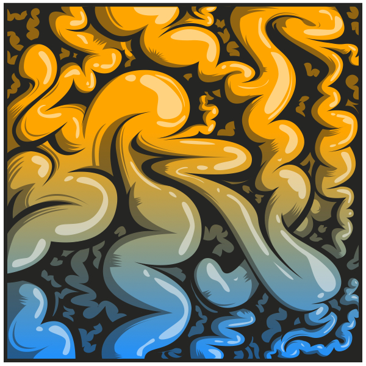
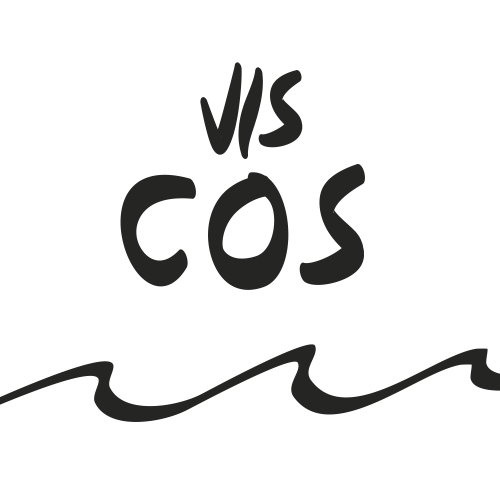

Season 2 of a project, which was (and is) inspired by Una Kravets.
The goal is to share my personal learning efforts, making them explicit & open.
=======A (little) R package, which aims and coordinating the different efforts to build helping-tools for the conceptual rainfall-runoff model COSERO.
>>>>>>> origin/master
A (little) R package, which aims and coordinating the different efforts to build helping-tools for the conceptual rainfall-runoff model COSERO.